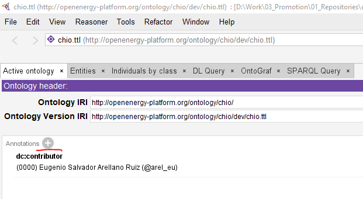
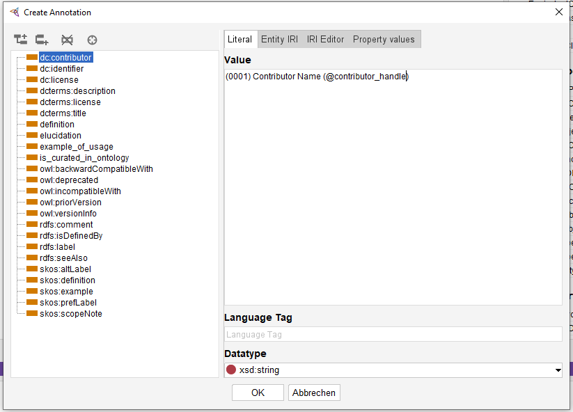
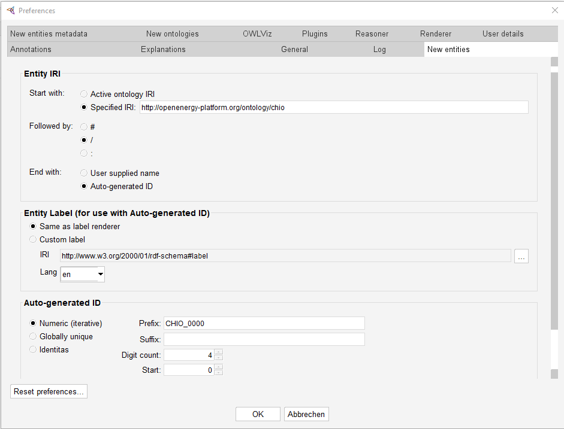

Getting started
Ontology development can be done with multiple approaches. In our case we do a method heavily inspired by the one used by the Open Energy Ontology (OEO).
Dependencies
Before you can start working in the project you need to set up your development environment. This page should list all the basic dependencies you need to get started.
1. Python
A significant part of our work builds on the efforts coming from other ontology projects, particularly the OEO and the Basic Formal Ontology (BFO). This requires scripting which can vary a lot with operating systems. To reduce the overhead from stepping in we recommend using python whenever possible. Python is also used to build this documentation using the incredible MkDocs library. Python can be acquired in many ways, some examples might be their official site, package managers like anaconda or app stores like the Microsoft store. We suggest you install it your (or your company) preferred way.
2. Poetry
As previously mentioned, python can come from many sources. To make sure the environments are as consistent as possible we suggest installing poetry using the official poetry installation guide.
3. Java platform
Most mature ontology development tools rely on the OWL API which runs in the Java platform. To use most of the software we need to work with ontologies you need to have a working Java installation. Please refer to the installation instructions from OpenJDK.
Note
There is an alternative API called horned-owl which is written in Rust and can be made compatible with Python. It is however still in development but we may have the chance in the future to move away from Java into a pure Python environment.
4. Protégé
Protégé is the industry standard OWL ontology development tool. You will be dealing with it 80% of the time so please install it using the official channel. We may consider moving to tawny-owl but since it requires setting up Clojure, and we already add many dependencies we postpone this. Also, the point-and-click pattern of Protégé, while not efficient is easier to introduce to non-programmers.
4. Git
Cooperative development workflows require version control software. In this project, we rely on git. If you are not familiar with git please do before you even think about making changes to the ontology. There are a lot of resources out there, such as the official git tutorial. Git can be installed using the instructions on their official downloads webpage](https://git-scm.com/downloads).
5. Linux system (Optional)
To properly compile the ontology one needs to use make which works properly only in Linux and macOS. If you are working from a Windows system, either enable the WSL or install a library like GnuWin. The compilation is not necessary for development, but it must be always done before the release.
Workspace
Once all the dependencies are installed clone the repository into a directory of your preference using git.
Then change to the cloned directory, or open it with your favourite IDE and call poetry by running:You can proceed to get the ROBOT dependency by calling the provided Python script:
Become a contributor
To become a contributor you have to create a new branch from dev.
Open Protégé and go to the Active Ontology tab, then click on the +** button next to annotations:

Pick the next consecutive number available and add your information with the following format:

Save the file and your changes should show in the rendered file, something such as:
<http://purl.org/dc/elements/1.1/contributor> "(0000) Eugenio Salvador Arellano Ruiz (@arel_eu)" ,
"(0001) Contributor Name (@contributor_handle)" .
Add the changes with git:
And then push making a new branch in GitLab:
At last, create a merge request, and we will review your submission.
Protégé settings
Go to File>Preferences... and search for the New Entities tab and configure it as follows:

User unique ID
Make sure that you use your unique user ID in the Prefix like CHIO_XXXX where XXXX is your ID.
The 1000th user
I do not really expect the number of users to get that high but just in case, the number 1000 is reserved for identifiers renamed automatically with scripts